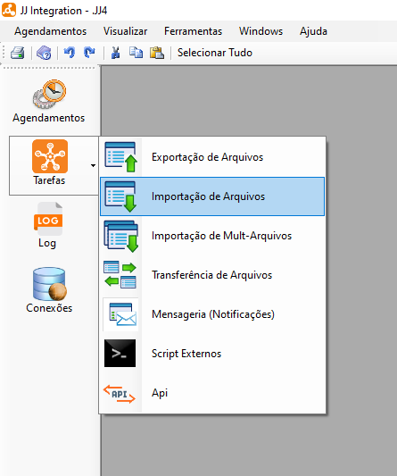
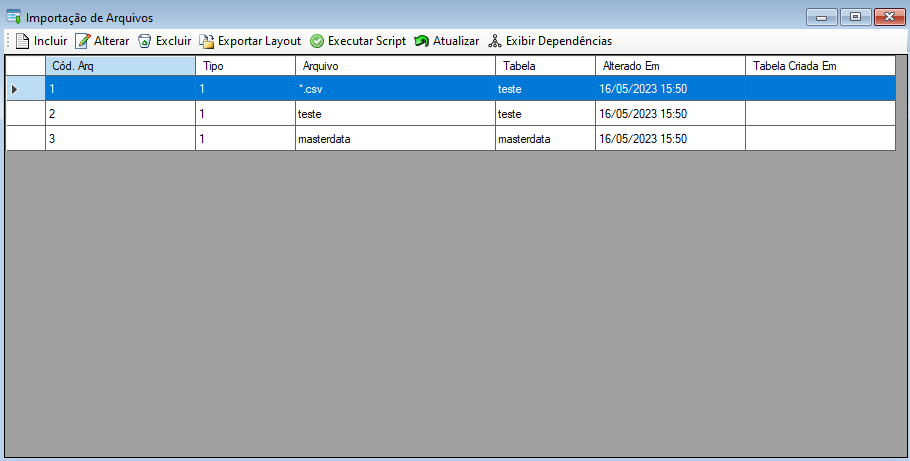
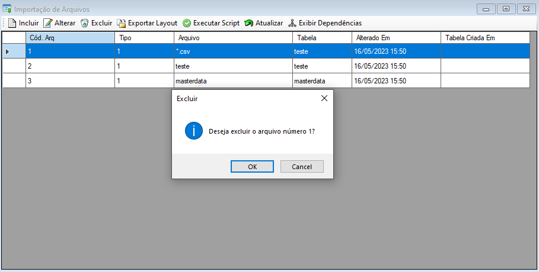
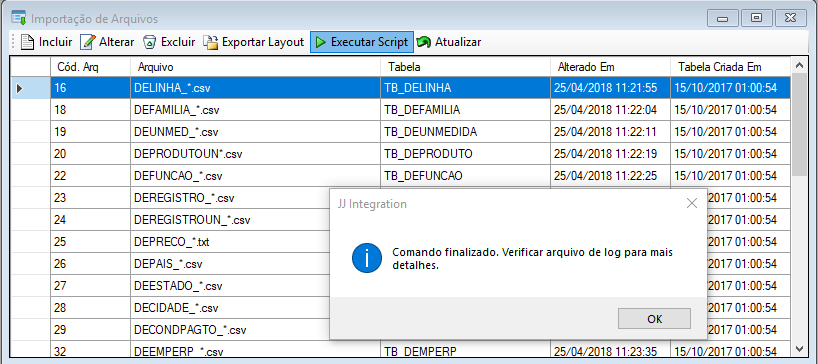

Importação de Arquivos
Importação de arquivos é uma função onde pode-se incluir, alterar, excluir arquivos cadastrados no sistema e atualizar a lista de arquivos.
Esta seção pode ser acessada pelo menu lateral em Tarefas ou menu de utilidades > Ferramentas > Importação de Arquivos.
A importação de arquivos envolve trazer dados de um sistema externo para o sistema de destino. Isso geralmente é feito lendo o conteúdo de um arquivo e inserindo os dados relevantes no sistema de destino. Por exemplo, você pode importar dados de um arquivo CSV, XML ou JSON para atualizar o banco de dados do seu sistema.

 Importação de Arquivos
Importação de Arquivos
- Ao selecionar o sistema irá exibir uma tela onde será possível incluir, alterar e excluir mapeamentos de arquivos, exportar layouts, executar scripts, atualizar e exibir dependências.

Selecione o botão Incluir  para incluir um novo mapeamento de importação de arquivos. Ao selecionar o sistema irá exibir uma tela para cadastro onde terá cinco abas para configuração sendo elas: arquivo, detalhes, mapeamento, eventos e script (criação de estruturas), ao finalizar o preenchimento selecione o botão "Ok" para salvar o novo mapeamento.
para incluir um novo mapeamento de importação de arquivos. Ao selecionar o sistema irá exibir uma tela para cadastro onde terá cinco abas para configuração sendo elas: arquivo, detalhes, mapeamento, eventos e script (criação de estruturas), ao finalizar o preenchimento selecione o botão "Ok" para salvar o novo mapeamento.
- Na aba "Conexões" preencha os dados de formato, origem e destino desejados para a importação do arquivo.

- Na aba "Detalhes" defina os detalhes de importação como número de linhas desejado, se deseja ou não ignorar a primeira linha e aborto de importação caso necessário.

- Na aba "Mapeamento" pode-se adicionar ou remover colunas e definir as propriedades do arquivo como nome, descrição, tipo, tamanho, valor padrão e etc.

- Na aba "Eventos" selecione o evento que deseja executar e preencha o campo Script com o script de banco de dados necessário para execução.

Tipos de evento:
Após criar todas as tabelas:
Ao executar o agendamento pela primeira vez, se não existir a tabela no banco de dados o sistema irá executar os scripts de criação da tabela e das procedures. Esse evento será disparado após esse procedimento.
Ao executar o agendamento:
Ao executar agendamento e existir arquivos para ser importado. Esse evento será disparado uma única vez antes de processar todos os arquivos.
Antes de efetuar importação de dados:
Ao executar agendamento e existir arquivos para ser importado. Esse evento será disparado antes de iniciar a importação de cada arquivo.
Após efetuar importação de dados:
Ao executar agendamento e existir arquivos para ser importado. Esse evento será disparado no términon da importação de cada arquivo.
- Na aba "Script (criação de estrutura)" selecione o botão "Gerar Script" para gerar a estrutura da importação e após selecione o botão "Executar Script" para executar a leitura da estrutura criada.

Selecione o botão Alterar  para editar um mapeamento de importação de arquivos. Ao selecionar o sistema irá exibir uma tela com detalhes onde terá cinco abas de configuração sendo elas: arquivo, detalhes, mapeamento, eventos e script (criação de estruturas), ao finalizar as alterações selecione o botão "Ok" para salvar e alterar o mapeamento. Também é possível Duplicar a importação já criada, visando simplificar o processo.
para editar um mapeamento de importação de arquivos. Ao selecionar o sistema irá exibir uma tela com detalhes onde terá cinco abas de configuração sendo elas: arquivo, detalhes, mapeamento, eventos e script (criação de estruturas), ao finalizar as alterações selecione o botão "Ok" para salvar e alterar o mapeamento. Também é possível Duplicar a importação já criada, visando simplificar o processo.
- Na aba "Conexões" altere os dados de formato, origem e destino desejados para a importação do arquivo.
- Na aba "Detalhes" altere as definições de detalhes de importação como número de linhas desejado, se deseja ou não ignorar a primeira linha e aborto de importação caso necessário.
- Na aba "Mapeamento" adicione novas colunas ou remova colunas existentes e altere as propriedades do arquivo como nome, descrição, tipo, tamanho, valor padrão e etc, caso seja necessário.
- Na aba "Eventos" altere o evento que deseja executar e preencha o campo Script com o script de banco de dados necessário para execução.
- Na aba "Script (criação de estrutura)" selecione o botão "Gerar Script" para gerar a estrutura da importação e após selecione o botão "Executar Script" para executar a leitura da estrutura criada.
Para excluir um mapeamento selecione o mapeamento desejado e após selecione o botão Excluir  , após selecionar o sistema irá exibir uma mensagem de confirmação, selecione botão "Ok" para confirmar e excluir.
, após selecionar o sistema irá exibir uma mensagem de confirmação, selecione botão "Ok" para confirmar e excluir.

Para executar um script selecione o arquivo desejado na lista e após selecione o botão Executar Script , após selecionar o sistema irá executar o script e ao finalizar irá exibir uma mensagem informando, selecione o botão "Ok" para fechar a mensagem e continuar o uso normal do JJ Integration.

Para atualizar a lista de tarefas selecione o botão Atualizar  , após selecionar o sistema irá atualizar a lista sendo possível dar continuidade nas atividades normalmente.
, após selecionar o sistema irá atualizar a lista sendo possível dar continuidade nas atividades normalmente.
Para exibir dependencias da tarefa selecionada, selecione o botão Exibir Dependências  , após selecionar o sistema irá exibir a lista de dependências da tarefa caso exista alguma.
, após selecionar o sistema irá exibir a lista de dependências da tarefa caso exista alguma.